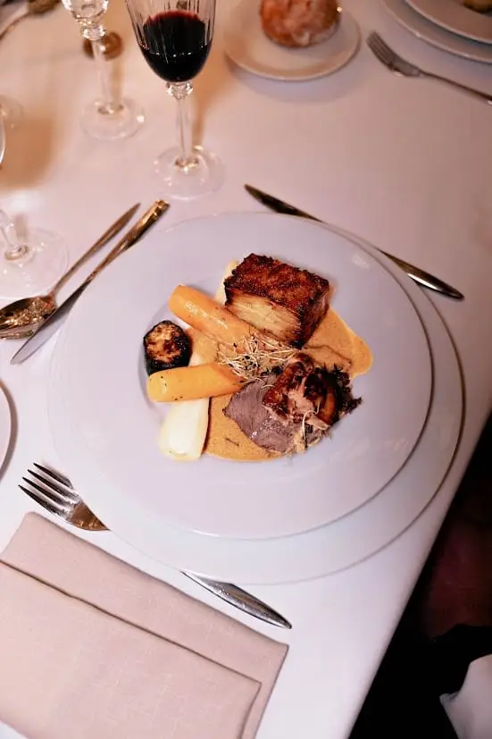

When you plan your wedding, every detail counts. The venue, the decor, the music and the entertainment all contribute to the success of this exceptional day. Yet if there is one thing guests often remember for years, it is the meal.
The wedding menu plays a central role in your guests' experience. A successful dinner creates memories, encourages conversation and shapes the overall atmosphere of your reception. Conversely, ill-suited food or an overly complex menu can leave a mixed impression.
So how do you choose a menu that will delight all your guests? How do you strike the right balance between your own wishes and your loved ones' expectations? Should you favour local cuisine? Which dessert will please everyone?
In Bordeaux and throughout Nouvelle-Aquitaine, there are many ways to create a menu that is elegant, indulgent and enjoyable for all.
Why does the menu matter so much at a wedding?
The meal often takes up several hours of your reception. It is during the cocktail hour, dinner and dessert that guests spend most of their time together.
Food therefore becomes much more than a simple meal.
It shapes the overall atmosphere of the day. A well-designed menu encourages conversation, creates memories and adds to your guests' enjoyment.
Ask yourself: what do you usually remember about a wedding you attended?
Very often, guests remember the venue, the atmosphere and, of course, the menu served at dinner.
That is why it is essential to pay particular attention to every stage of the meal.
Which menu will satisfy all your guests?
One of the most common mistakes is to build a menu based only on the couple's tastes.
Of course, your wedding should reflect who you are. But it is also important to think of the guests who will share the day with you.
Before choosing your menu, take the time to identify any dietary requirements:
- Vegetarians
- Food allergies
- Food intolerances
- Special diets
- Religious restrictions
The better you know your guests' habits, the easier it will be to design a suitable menu.
The goal is not to create ten different menus, but rather to offer varied food that will please as many people as possible.
Should you choose local food for your wedding?
The answer is very often yes.
In Bordeaux and Nouvelle-Aquitaine, we are lucky to enjoy an exceptional culinary heritage.
Choosing local food lets you showcase your region while offering your guests quality produce.
Local produce has several advantages:
- optimal freshness
- better traceability
- superior flavour
- a more responsible approach
Guests particularly enjoy discovering regional specialities at a wedding.
Oysters from the Arcachon Bay, duck from the South-West, asparagus from the Landes and of course Bordeaux wines give your menu a real identity.
A local menu also tells a story. It gives your guests an authentic experience, deeply rooted in the region.
How do you build a balanced dinner?
Dinner is often the heart of the reception.
A good dinner should be generous without being excessive.
Many couples think a menu needs a multitude of dishes to impress their guests. Yet that is not always the best strategy.
A dinner that is too rich may tire guests out before the dancing even begins.
Ideally, choose:
- A refined starter
- A balanced main course
- An indulgent dessert
This format usually satisfies guests while keeping a pleasant pace throughout the reception.
Ask yourself another question: will your guests still want to enjoy the evening after dinner?
A menu that is too heavy can quickly drain the energy of the whole event.

How do you please every kind of guest?
At a wedding, several generations gather around the same table.
Their expectations are not necessarily the same.
Grandparents often appreciate traditional cooking, while younger guests are sometimes drawn to more modern ideas.
To please everyone, it is best to rely on approachable, elegant recipes.
Quality ingredients are often more important than originality at all costs.
An excellent fish served with seasonal vegetables will generally win over guests more than a highly technical or experimental recipe.
Above all, your menu should bring pleasure.
Why adapt your menu to the season?

The season directly affects the quality of the food served.
A wedding in the height of summer in Bordeaux does not call for the same menu as a reception in autumn or winter.
Seasonal produce is:
- Tastier
- Fresher
- More affordable
- Better for the environment
In summer, guests particularly enjoy light, refreshing food.
A winter dinner, on the other hand, can welcome more generous, comforting dishes.
The season should always guide your culinary choices.
The cocktail hour: a key moment for your guests
The cocktail hour often sets the tone of the reception.
It is your guests' first taste of your wedding's culinary world.
Why not offer several food stations built around local produce?
For example:
- an oyster bar
- a plancha station
- ham carving
- a brazier
- tastings of local specialities
These stations let guests mingle while discovering friendly, quality food.
The cocktail hour is also a wonderful opportunity to showcase your identity and personal tastes.


Which dessert will please everyone?
Dessert is one of the most eagerly awaited moments of the meal.
But how do you choose a dessert that will delight every guest?
Today, the options are many:
- Traditional croquembouche
- Wedding cake
- Dessert buffet
- Café gourmand
- Sweet bar
The ideal dessert is often one that offers several choices.
Not all guests have the same preferences. Some love chocolate, others prefer fruit or lighter pastries.
Offering several options creates a more personal experience.
Dessert is also one of the most photographed parts of the wedding.
So it deserves special attention.

What about the children?
Children are part of many weddings.
Offering them a suitable menu is essential.
A simple but quality children's menu lets the youngest guests fully enjoy the celebration.
The aim is not to serve standard food, but rather reassuring dishes they will enjoy eating.
A happy child at dinner also makes for relaxed parents.
As a wedding planner in Bordeaux, I always advise thinking about the whole experience
As a wedding planner in Bordeaux, I always advise couples to think about their menu as a whole.
The meal is not just a succession of dishes.
It is a true experience that accompanies your guests throughout the day.
I often recommend choosing quality local food over an overly complex menu. Local produce from Nouvelle-Aquitaine offers incredible richness and helps create an authentic reception.

I also advise thinking about the pace of dinner. A meal that is too long or too rich can slow down the overall mood of the evening.
Finally, never underestimate the importance of dessert. It is often the last taste your guests will remember before heading to the dance floor.
Every decision should be made with one question in mind: "Will my guests have an exceptional time?"
Why hold a tasting before the wedding?

No menu should be approved without a prior tasting.
This step lets you check:
- the flavours
- the portions
- the presentation
- the food and wine pairings
- the pace of dinner
The tasting is also a chance to fine-tune certain details of the menu.
Sometimes a simple adjustment to a side dish, a dessert or a cooking time can completely transform the experience you offer your guests.
Does the perfect menu really exist?
The truth is that there is no universal menu.
Every wedding is unique.
The best menu is the one that suits your story, your budget, your venue and your guests' expectations.
Whether you are planning a wedding in a château near Bordeaux, among the Gironde vineyards or elsewhere in Nouvelle-Aquitaine, what matters most is creating a moment of sharing.
A successful menu is not necessarily the most luxurious.
It is the one that brings guests together around the same emotion.
In short,
Choosing your wedding menu takes thought, listening and planning. From the cocktail hour to dinner and dessert, every stage contributes to your guests' overall experience.
Choosing quality food, showcasing local produce from Bordeaux and Nouvelle-Aquitaine, adapting the menu to different generations and thinking about your guests' comfort are the keys to a successful reception.
Because beyond the flowers, the decor or the music, it is often the moments spent around a good table that stay etched in memory.
So, which menu will best tell your story?
Lovely Day Event offers several services
Wedding planning
I will be involved at every stage of your preparations and guide you through your choices. I come up with ideas so that your wedding looks like no one else's.
Wedding styling
Creative and passionate, I am a certified Wedding Designer and I create a scenographic atmosphere that matches your wedding theme.
On-the-day coordination
I will be the conductor, managing your suppliers, the set-up of your decor and the flow of your beautiful day.